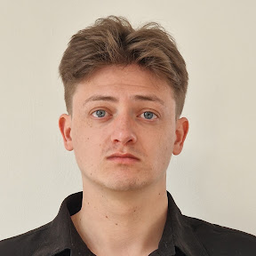

Soy una persona motivada con ganas de aprender...
2024-2026 Recepcionista de hotel de 4 estrellas, cadena MarHotels
2023 Recepcionista de hotel de 3 estrellas, cadena Bluebay Lagomonte
2023 Formación profesional: Especialista y entrenador en rehabilitación de patologías de la columna
2021-2023 Grado Superior de Acondicionamiento Físico, IES Guillem Cifre de Colonya
2019-2021 Grado Medio de Conducción de actividades fisicas en el medio natural, IES Guillem Cifre de Colonya
2015-2019 Escuela Secundaria Obligatoria, IES Alcudia
-Inglés, nivel nativo
-Español, nivel nativo
-Catalán, nivel nativo
-Japonés, nivel N4
-Alemán, nivel B1